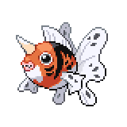

Terajuma Forest
Gym Battle

When you're ready, talk to Valarie and go down onto the battlefield. If you need to go back up to change your team, you can walk around and talk to Valarie again. Step into the battlefield to begin the battle.
Water Show Performer Valarie
|
Qwilfish, Level 37 - Poison Barb |
Water | Waterfall |
|---|---|---|
| Bounce | ||
| Poison | Poison Jab | |
| Aqua Jet | ||
|
Seismitoad, Level 37 - Assualt Vest |
Water | Tidal Wave |
| Drain Punch | ||
| Ground | Sludge Bomb | |
| Grass Knot | ||
|
Lanturn, Level 38 - Leftovers |
Water | Tidal Wave |
| Ice Beam | ||
| Electric | Thunderbolt | |
| Toxic | ||
|
Floatzel, Level 39 - Muscle Band |
Water | Waterfall |
| Ice Punch | ||
| Brick Break | ||
| Aqua Jet | ||
|

Seaking, Level 39 - Rindo Berry |
Water | Waterfall |
| Bounce | ||
| Poison Jap | ||
| Megahorn | ||
|
Primarina, Level 40 - Wacan Berry |
Water | Sparkling Aria |
| Ice Beam | ||
| Fairy | Moonblast | |
| Energy Ball | ||
Reward:  3520 3520
|
||
This is a battle where the field is plays a large part on the difficulty of the battle. On the Water Surface, all non-Water-type Pokemon without Swift Swim have their Speed cut in half, and Swift Swim will activate for those that have the ability. This means that practically every single one of her Pokemon will outspeed you, and with their glass cannon builds they can easily wipe you without you even getting to get a hit off. Every single one of her Pokemon have a lot of Ice-type, Flying-type, and/or Poison-type coverage moves, making finding a team for this battle very difficult. Entry hazards are also limited to just Stealth Rocks, as Spikes, Toxic Spikes, and Sticky Web will sink, making them useless.
In terms of her Pokemon, all of them are fully geared to destroy your team before you have a chance to deal any damage back as out of her 24 moves, only 1 of them is a non-damaging move. Qwilfish, Seismitoad, and Floatzel all have Swift Swim, so even if you have a non-grounded Pokemon or a Water-type they will still most likely outspeed you, and Paralyzing them will only bring their Speed down to normal levels while they hit you hard with their STAB moves. Lanturn is extremely bulky, and is only weak to Grass-type moves which it has Ice Beam for. Seaking has Lightning Rod, granting it immunity to Electric-type moves and also holds a Rindo Berry to reduce the first Grass-type move. Her Primarina has solid natural bulk, and its very hard between Sparkling Aria and Moonblast, while still having Ice Beam and Energy Ball as extra coverage.
There are three main strategies to consistently beating Valarie. The first revolves around taking hits. While her Pokemon are very fast and have very versatile coverage moves, her Pokemon doesn't actually have high offensive stats except for Floatzel and Primarina. That means that a neutral Pokemon specializing in Defense can deal with Qwilfish and Seaking, and Special Defense Pokemon can deal with Lanturn. Seismitoad has a mixed damage profile, but can't do too much damage unless its super effective. If paired with a Reflect or Light Screen, you can actually deal with her hits much better than otherwise.
Another strategy is taking advantage of the field. The Water Surface field not only boosts Water-type moves, but also Electric-type moves. This means that most Electric-type Pokemon at this point in the game can hit three of her six for massive damage, provided that they can survive a hit. Again, setting up Reflect or Light Screen can provide that little bit of defensive power to let your Electric-type Pokemon run wild. If you got a male Espurr from Wispy Path, it can quickly set it up with Prankster. Emolga is another choice since its Flying-type means that it won't have its Speed lowered, and it is naturally fast.
The final strategy needs a little bit of set up to take away her field advantage. This strategy requires you to catch Abomasnow from Blacksteeple Castle. If you haven't been using your Rare Candies, at this point you should have just enough to manually get Abomasnow to level 47 for it to learn the move Blizzard. Then you can simply use Reverse Candies to delevel it to level 40 again. If Abomasnow manages to get a Blizzard off, the field will change to an Icy Field and Valarie has no ability to change it back. As long as you don't use an AoE Fire-type or Ground-type move such as Flame Burst or Earthquake, the field will stay as an Icy Field. With her Speed advantage gone, your faster Pokemon can actually outspeed and wreck her glass cannon team. Again this requires you to have been saving your Rare Candies, but in a pinch it is one of the easy cheese strategies you can use against Valarie.
Once you beat her, she'll take you back to Terajuma Shore and you'll be able to move on to Chapter Six.